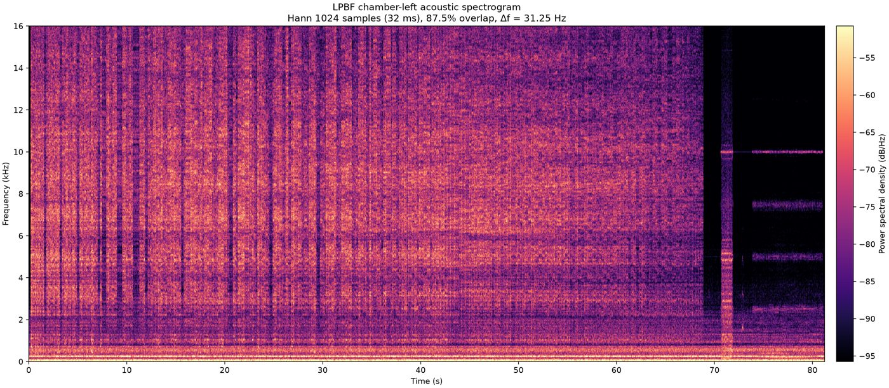
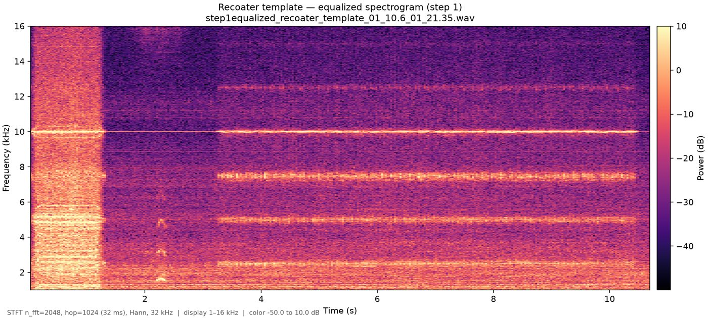
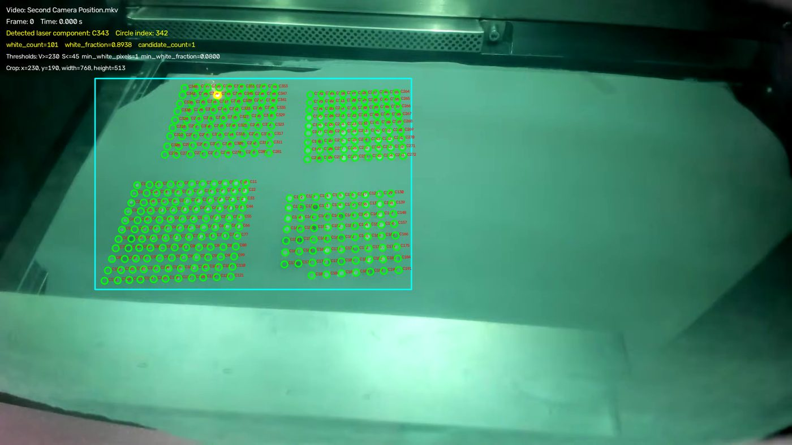
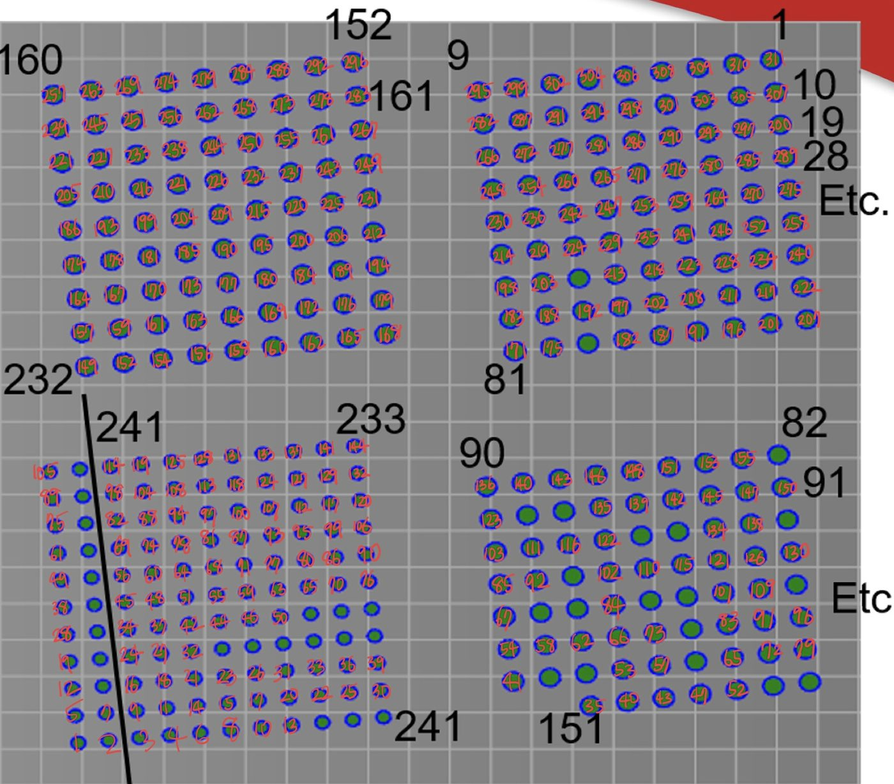
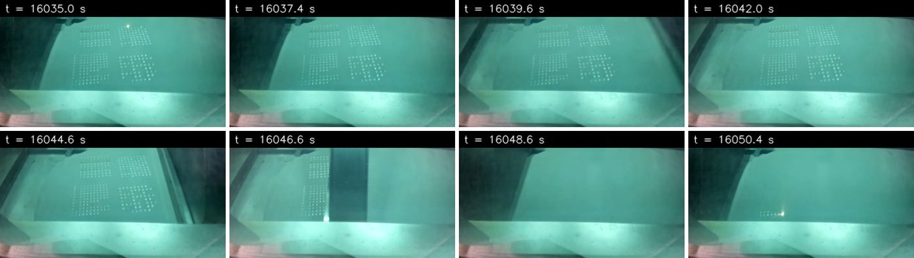

Laser powder bed fusion (LPBF) builds a metal part one thin layer at a time: a recoater blade spreads powder, the laser melts the cross-section, and the cycle repeats. A microphone in the build chamber hears all of it. The question behind this project is whether that sound can tell us something about the material being made. Before any of that, the audio has to be cut into layers, and on a multi-hour recording that has to be automatic.

What I built
- A Python pipeline that isolates printing layers from LPBF chamber audio, supporting a funded project on in-situ material-property prediction for EUROFER97 steel.
- Acoustic equalization, harmonic–percussive separation, and log-mel template matching to find recoater events, then layer boundaries from the energy change when the laser restarts.
- A 5.2-hour recording segmented into 209 layer segments and its shorter companion channel into 135, exported as WAV clips with an Excel timing index and spot-checked by hand.
- A video-side check: the chamber camera sees the laser, so brightness inside the build-plate region gives an independent laser-on/off signal.



